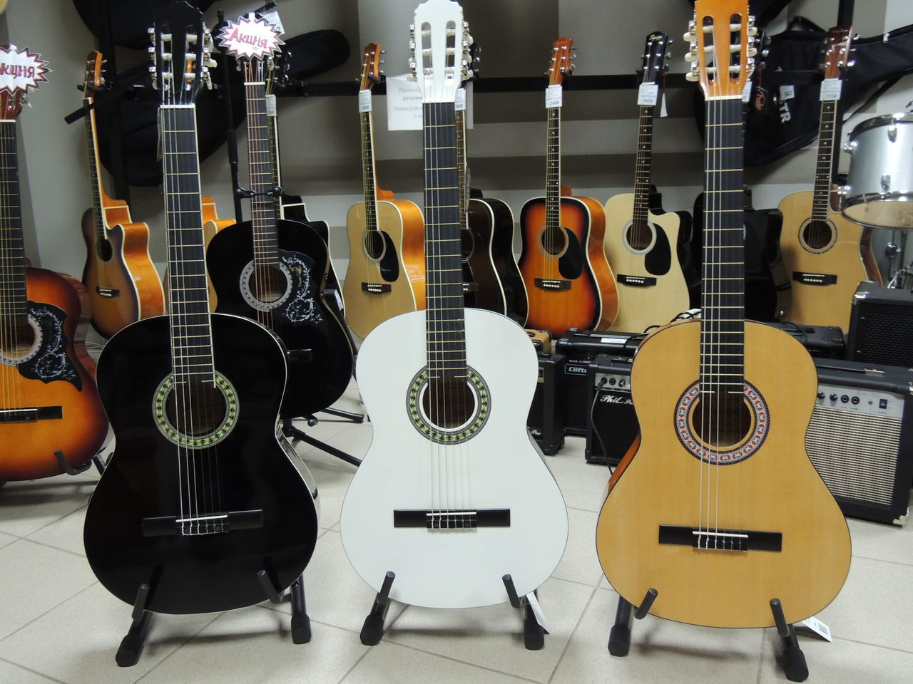
Содержание статьи
Дредноут (вестерн гитара)
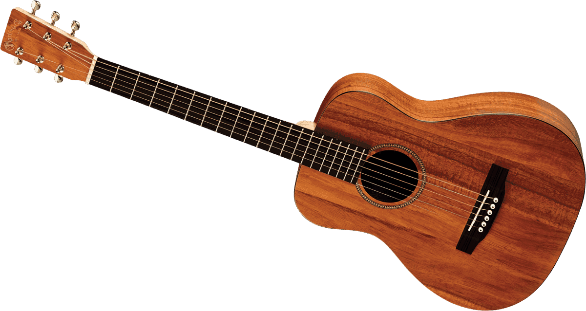
Гигант в мире акустик. Славится своим мощным резонаторным звучанием и универсальностью. Название «вестерн» говорит само за себя – используется для игры в стилях кантри, блюз, acoustic rock. Яркий представитель в мире музыки – Amy Macdonald. Иногда представляет трудность для новичков, так как гриф гитары узкий (некоторым трудно попадать пальцами в струны, так расстояние между ними небольшое). Но если сомневаетесь, с чего бы начать вашу «дворовую» карьеру – старина Дред будет хорошим выбором.
Джамбо
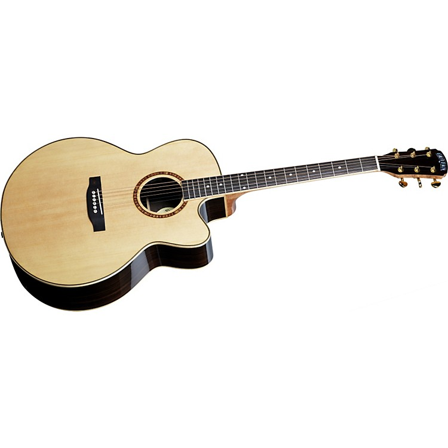
Вам скорее известна старая детская игра с мячом, нежели то, что так названа редкая в настоящее время гитара. Звонкие аккорды с глубокой серединой и насыщенными басовыми нотами. Такие классные штуки использовали прежде всего рокеры 80-х годов, когда играли свои песни без сопровождения основной группы. Акустический рок, поп-рок, кантри – это всё про красавца с изящным вырезом от 15-ого лада. Стадионные хиты Рика Спрингфилда и Брюса Спрингстина были записаны с джамбо в руках.
Малый джамбо
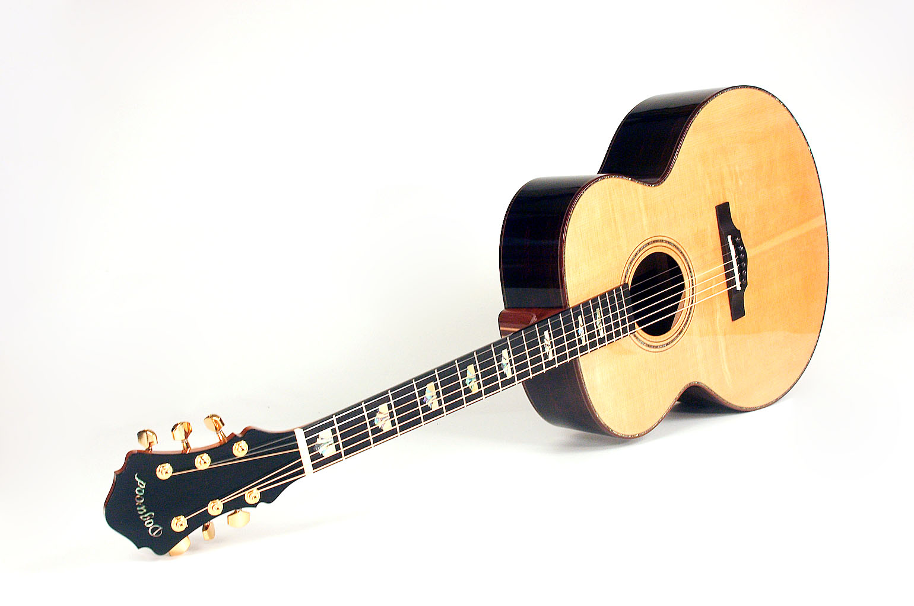
Этот товарищ уступает своему старшему собрату в размерах и громкости звучания. Но чего ему не занимать – это мягкости и интеллигентности. Благодаря вырезу катавею, он будто зазывает положить на него руку и сыграть балладу. Чёткий и выразительный звук и широкий дредноутовый гриф идеально подходит для студийной работы. Современные фолковые музыканты часто используют его. Представитель – девичий дуэт First and Kit.
Аудиториум (Auditorium/Orchestra)
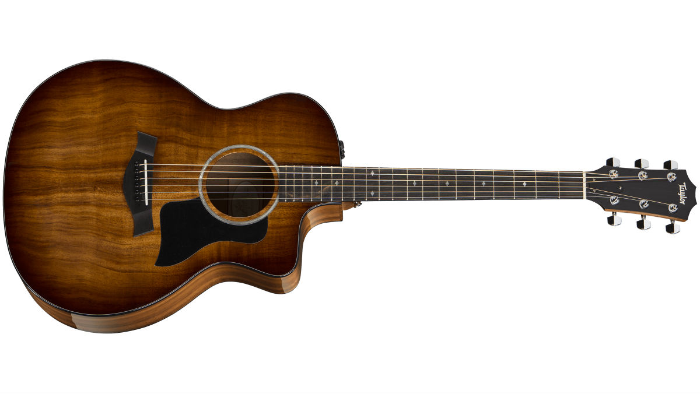
Нетрудно догадаться по названию, что инструмент используется для игры в аудиториях – то есть малых и средних концертных залах. Чаще всего применяется для работы в оркестрах. А здесь главное – не наступать на «горло чужой песне». Поэтому басовые и верхние частоты у неё убавлены, да и вообще звучит она несколько тише того же джамбо. Характеризуется 14-ладовым грифом (до корпуса). Жанр – камерная музыка, эстрада, фолк, блюз. Знаменитости – Эрик Клэптон.
Классическая/Фламенко
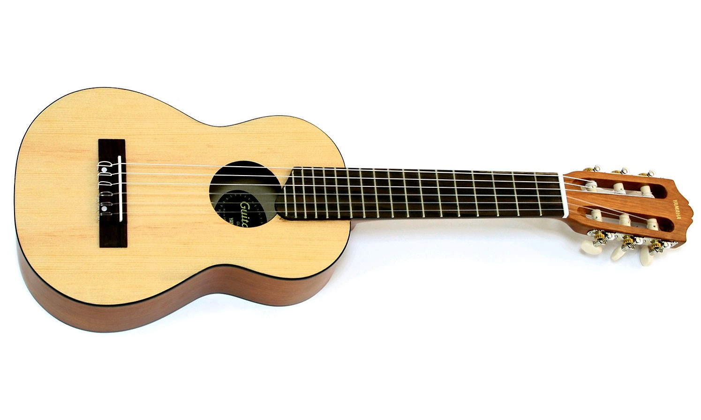
Классика широкий полый корпус, массивный гриф и нейлоновые струны. На ней занимаются как в музыкальных школах, так и в консерваториях. За игру боем именно на этой гитаре можно получить от преподавателя по рукам (главному рабочему инструменту музыканта). Резонирующая часть сделана из палисандра. Репертуар обширен: классическая музыка, испанские мотивы, босса-нова, самба и т.д. Звёзды – Пако Де Люсия.Первые отличия находятся в материале. Резонаторные части корпуса (в частности заднюю деку и боковую стенку) фламенко изготавливают из кипариса.
Двенадцатиструнная
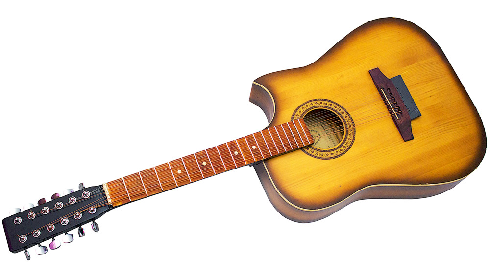
Акустическая. Отличается от 6 прежде всего строем. 1 и 2; 3 и 4 звучат в унисон. 5 и 6 – в октаву. Благодаря этому получается интересный «средневековый» звук с раскатистым эхом. В целом такие виды гитар используют для получения насыщенного, объёмного звучания. В основном – для сольного аккомпанемента в бардовской музыке и акустик-роке. Певцы – Александр Розенбаум.Электроакустическая. Такие «двенашки» часто приобретают вокалисты рок-коллективов. Аккомпанемент на них звучит громче, звонче и добавляет необычные нотки в саунд группы. Звёзды – Том Кифер из Cinderella.s
Электроакустические
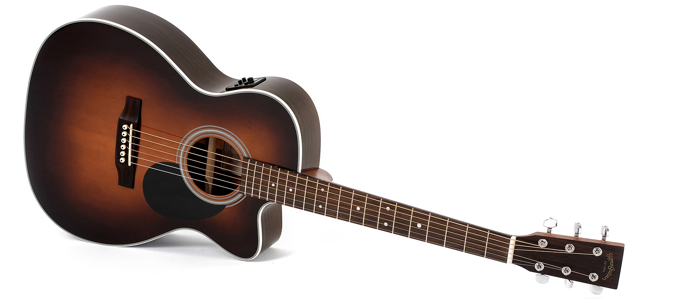
Это усовершенствованный вид акустики, который возможно подключить к усилителю. Отличается вырезом (катавеем) в обечайке для предусилителя сигнала и эквалайзере для настройки тембрального звучания. Темброблок (в нём наличествует паз для батареек, на некоторых моделях тюнер). Эти виды гитар используют для исполнения со сцены или в камерном зале. Также возможно воспользоваться гитарными эффектами, однако звук будет не слишком «уместным».
Полуакустические (Archtop, Джазовая, Блюзовая)
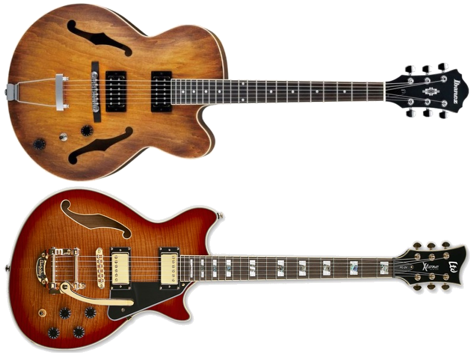
Полый корпус с несколькими резонирующими отверстиями + звукосниматели и электроника. Без подключения она всё равно будет играть даже тише, чем трэвел. Большого дредноутовского резонатора здесь нет.Главное, что бросается в глаза – винтажное оформление. Оно выглядят дико стильно. Немудрено, ведь подобным инструментом пользовались культовые рок-н-ролльщики вроде Эдди Кокрана. Чаще всего имеют два хамбакера, звук между которыми не слишком отличается – скорее более мягкий, и более роковый. Гриф чуть-чуть выпуклый, так как изначально Gibson изготавливали их по подобию скрипичных инструментов. Саунд – тёплый, мягкий, камерный. Чаще всего используется в джаз-бэндах, сёрф/рокабилли-группах, сольных импровизациях.
Электрогитары
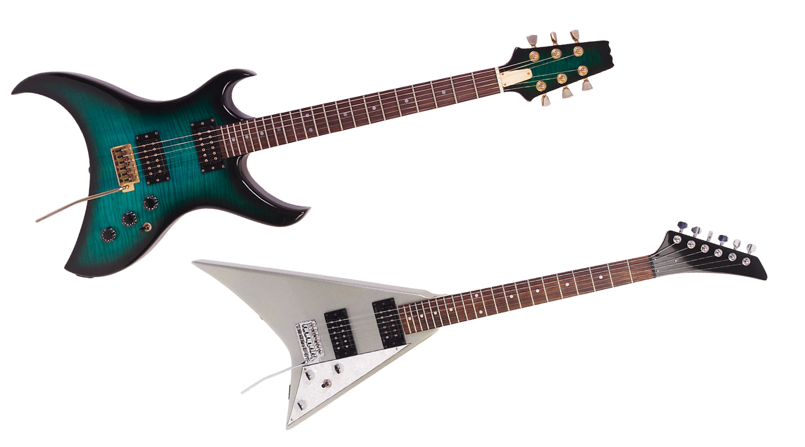
разновидность гитары с электромагнитными звукоснимателями, преобразующими колебания металлических струн в колебания электрического тока. Сигнал со звукоснимателей может быть обработан для получения различных звуковых эффектов и усилен — для воспроизведения через акустическую систему.
Бас-гитары
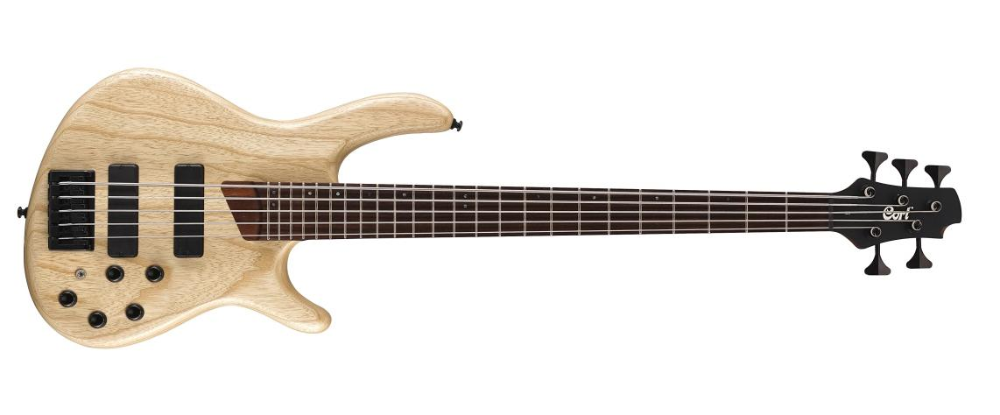
Обеспечивает ритм-секцию в коллективах. Характерна низким грудным звучанием и толстыми металлическими струнами.